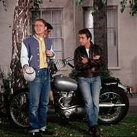
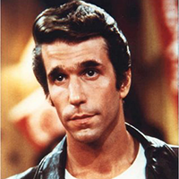
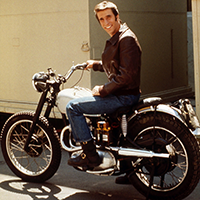
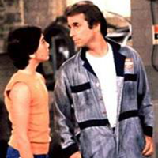

特征
- 充分响应、随其容器缩放。
- 每个断点分别设置
- 可用时使用CSS3，如果没有，则功能齐全。
- 滑动已启用。或禁用，如果您愿意。
- 桌面鼠标拖动。
- 无限循环。
- 完全可用箭头键导航。
- 添加，删除，过滤和取消过滤幻灯片。
- 自动播放，点，箭头，回调等...
单个
1
2
3
$('.single-item').slick({
'dots': true
});多个
1
2
3
4
5
6
$('.multiple-items').slick({
infinite: true,
slidesToShow: 3,
slidesToScroll: 3,
dots:true
});响应显示
1
2
3
4
5
6
7
8
$('.responsive').slick({
dots: true,
infinite: false,
speed: 300,
slidesToShow: 4,
slidesToScroll: 4,
responsive: [{
breakpoint: 1024,
settings: {
slidesToShow: 3,
slidesToScroll: 3,
infinite: true,
dots: true
}
},
{
breakpoint: 600,
settings: {
slidesToShow: 2,
slidesToScroll: 2
}
},
{
breakpoint: 480,
settings: {
slidesToShow: 1,
slidesToScroll: 1
}
}
// You can unslick at a given breakpoint now by adding:
// settings: "unslick"
// instead of a settings object
]
});可变宽度
125
200
175
150
300
225
125
200
175
$('.variable-width').slick({
dots: true,
infinite: true,
speed: 300,
slidesToShow: 1,
centerMode: true,
variableWidth: true
});适应高度
1
2
哈哈
3
哈哈
哈哈
哈哈
4
$('.one-time').slick({
dots: true,
infinite: true,
speed: 300,
slidesToShow: 1,
adaptiveHeight: true
});
中心模式
1
2
3
4
$('.center').slick({
centerMode: true,
centerPadding: '60px',
slidesToShow: 3,
responsive: [
{
breakpoint: 768,
settings: {
arrows: false,
centerMode: true,
centerPadding: '40px',
slidesToShow: 3
}
},
{
breakpoint: 480,
settings: {
arrows: false,
centerMode: true,
centerPadding: '40px',
slidesToShow: 1
}
}
]
});
延迟加载




$('.lazy').slick({
lazyLoad: 'ondemand',
slidesToShow: 3,
slidesToScroll: 1
});
自动播放
1
2
3
4
$('.autoplay').slick({
dots: true,
slidesToShow: 3,
slidesToScroll: 1,
autoplay: true,
autoplaySpeed: 2000,
});Fade模式
$('.fade').slick({
dots: true,
infinite: true,
speed: 500,
fade: true,
cssEase: 'linear'
});筛选
$('.filtering').slick({
slidesToShow: 4,
slidesToScroll: 4
});
var filtered = false;
$('.js-filter').on('click', function(){
if (filtered === false) {
$('.filtering').slick('slickFilter',':even');
$(this).text('Unfilter Slides');
filtered = true;
} else {
$('.filtering').slick('slickUnfilter');
$(this).text('Filter Slides');
filtered = false;
}
});销毁
如果你真的想成为那个家伙...
('.your-slider').slick('unslick');幻灯同步
$('.slider-for').slick({
slidesToShow: 1,
slidesToScroll: 1,
arrows: false,
fade: true,
asNavFor: '.slider-nav'
});
$('.slider-nav').slick({
slidesToShow: 3,
slidesToScroll: 1,
asNavFor: '.slider-for',
dots: true,
centerMode: true,
focusOnSelect: true
});
从右到左
注意： HTML标记或滑块的父级必须将属性“ dir”设置为“ rtl”。
$('.single-item-rtl').slick({
rtl: true
});用法
<html> <head>
<title>My Now Amazing Webpage</title>
<link rel="stylesheet" href="https://cdn.jsdelivr.net/npm/slick-carousel@1.8.1/slick/slick.min.css">
<link rel="stylesheet" href="https://cdn.jsdelivr.net/npm/slick-carousel@1.8.1/slick/slick-theme.min.css">
</head> <body> <div class="your-class">
<div>your content</div>
<div>your content</div>
<div>your content</div>
</div> <script src="https://cdn.jsdelivr.net/npm/jquery@3.4.1/dist/jquery.min.js"></script>
<script src="https://cdn.jsdelivr.net/npm/slick-carousel@1.8.1/slick/slick.min.js"></script>
<script type="text/javascript">
$(document).ready(function(){
$('.your-class').slick({
setting-name: setting-value
});
});
</script> </body> </html>